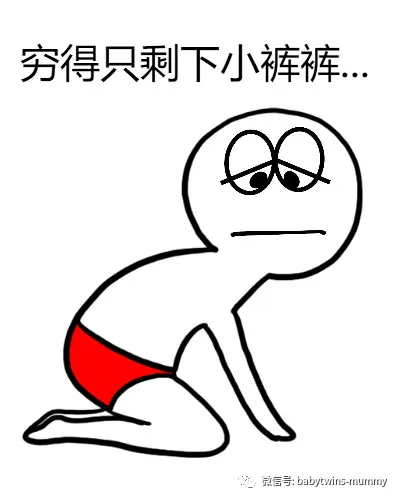
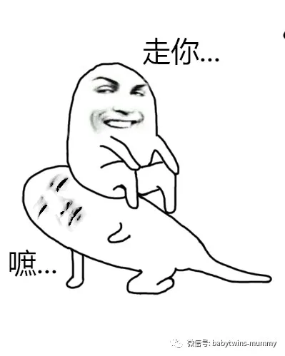

01
01
作为双胞胎父母，两个宝宝的第一年,
是相当艰苦卓绝的一年。
我在此大声宣布:
我的两个双龙宝宝已经过了那个第一年了。
那个想起来就心有余悸，毛骨悚然的一年。
闺蜜问我：“什么感觉”
我总是很悲壮的说：“太尼玛酸爽+狂野了”
如果你怀疑人生，请生双胞胎！
如果你相信人生，请生双胞胎！
你会更深刻地领略到什么叫做
“落霞与孤鹜齐飞， 屎尿共奶水一色。”
02
已经有很多个夜晚，天已经泛起鱼肚白了。
TM的，老娘还没开始睡呢！
好不容易眯了一会儿，这个娃又醒了，那个娃又尿了。
我只知道我是闭着眼睛给娃泡奶，喂奶的。
我只知道我可以靠着墙壁就能打鼾那种。
我只知道我眼前所有的美食包括亲生的娃...
都比不过一张床重要。
闺蜜建议我狠心一次，把门锁起来，
整个人仍在床上，好好摆个大字型，
睡个天昏地暗。
我真的照做了。不要指责我怎么当妈的。
对不起，臣妾真的太困了！
结果就是，没有睡成，
婆婆把门撬开了，拎着两个哇哇大哭的娃往床上一丢。
最后...
自己脑补吧！
03
好在这样的日子，在哥俩满三个月之后，渐渐地得到缓解。
在家人的支持和帮助下，我顺利返回职场。
养育一对双胞胎比养育一个孩子，其中的辛苦指数并非是乘以2那么简单。
很多人无比羡慕地说道：“多好啊，一起养大了。”
我总是苦涩地一笑而过：“辛苦啊！”
现在哥俩快三岁了，我有时候会跟圆圈爸打趣道，
“要不，再来一对！”
圆圈爸分明是打着冷战回答我的，
“求放过！”
我是好了伤疤忘了疼的那种人，好不容易轻松点了，
我就逢人便说生娃不疼，也就是肚子切开七层而已。
养娃不累，也就是无数个夜晚与奶水屎尿共眠而已。
圆圈妈的经验分享：
01
请尽可能地“作”起来
大声告诉你身边所有人，我需要帮助！
发动一切可以发动的力量。
亲妈负责大人的一日三餐和家务活
婆婆负责孩子的起居饮食，比如把屎把尿...
而你，负责吃吃吃，睡睡睡，然后奶娃!奶娃!奶娃！
在哥俩出生的头一个月，我真的什么都做不了.
伤口的疼痛和产后的后遗症，我只能吃和睡.
那时没有钱请保姆，只有孩子他们的爷爷奶奶和小姑子帮忙，
我才磕磕碰碰的度过了女人一辈子中最狼狈的一个月---坐月子！
02
请把宝爸拉到一线战场
“我先睡了，明天要早起！”
“要加班，晚点回！”
“娃太吵，我要去隔壁房间睡！”
有以上行为的宝爸，请自觉脱裤子打屁股。
还记得“为母则刚”的下一句是什么吗？
“为父则强”
嫌吵？嫌累？嫌烦？
TM的！怎么不嫌自己没有史泰龙那么强大呢？
我总是很自豪地跟闺蜜炫耀，
我这一生最成功的决定就是嫁给圆圈爸。
说这句话是有凭有据的，
因为圆圈爸在这个育儿道路上的重要性完全不亚于我这个当妈的。
而他对我们娘三所做的一切，
堪称中国好老公，中国好爸爸！
我一直没有办法理解那些丧偶式的婚姻是怎么存在的。
我以为每个家庭都跟我的一样，
对老公的含义：一个提供精子+银子，顺便还会照顾孩子+关心妻子的雄性动物！
03
请处理好夫妻关系
孩子是夫妻感情情感的纽带，
同时也是争吵的导火线！
这一点也不假，
再好的感情，经历了油盐柴米酱醋茶之后，
也会有鸡飞蛋打，鸭飞狗跳，硝烟弥漫的时候。
我是脾气很臭的人，加上产后各种激素的释放。
我每天就像定时炸弹一样，遇明火就爆。
我事先给圆圈爸支招，如果感觉我控制不住情绪了，
就抱着娃赶紧躲，免得波及无辜众人。
圆圈爸表示理解，每次感觉我要爆发了，
就疏通所有人识相地躲一边，静观其变。
很奇怪的是我居然不定时自我治愈好！没啥诀窍！
04
请处理好婆媳关系
哪个结了婚的女人心里没那点破事啊。
就是怎样搞定婆婆?
君不见，一开始有这样想法的女人最终都没几个有好下场。
高情商的女人会把婆婆当做是育儿道路上的前锋。
把那些不擅长的事情都清扫干净，比如把屎把尿，给新生儿洗澡...
是的！直到现在我都不知道怎么给小婴儿洗澡，
如果有二胎，我估计又要哀鸿遍野了！
这些大大小小的事情，都是婆婆她一个人默默无闻，亲力亲为地操持，
其中有争吵有嫌隙有疙瘩，但都烟消云散了。
看着孩子们一天天地长大长重，我心里无比的感激！
这个与我不相干，非亲非故的女人真的很值得我由衷地喊一声“妈妈”
05
最后：请加油吧，女人！
没有哪个女人天生就是当妈的。
养育一对双胞胎也是每个当妈的梦寐以求的事情。
相信自己。没有过不去的坎！
看看哥俩那萌萌的微笑，甜甜的睡颜，
多大的苦啊累啊，也该偃旗息鼓，落荒而逃了吧！
06
等待黎明！
某个即将破晓的凌晨，我蓬头散发，睡眼惺忪地抱着两只娃喂奶时，
有一丝温柔的光，轻轻地搭在我的肩膀上了。
两个娃眯着眼喝着奶，看着我。
我和他们对视了很久很久...
仿佛这个世界就是我们娘三的。
如果他们会表达，他们应该会说：妈妈，你真棒！
是的！双胞胎的妈妈，你真的很棒了！
好好享受这酸爽+狂野的日子吧！
*作者简介：圆圈妈，家有孖仔男两枚，立志做一名合格的80后全职妈妈。
个人博客：三个男人（www.sgguy.com/）
一个专注双胞胎群体的网站，面向辣妈奶爸，每天分享亲子养育知识。
本文为圆圈妈原创，图片来自网络，公众号转载可联系授权。
欢迎个人分享给需要的朋友们。
支持原创就在文末点赞，欢迎留言！
敬请关注孖仔帮公众号。
专注双胞胎孩子的成长｜分享育儿资讯
微信ID：babytwins-mummy

